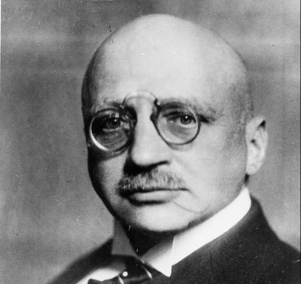

Periodical 2018
Home
Disappearing Spoon
Orientation: Column By Column, Row by Row
Periodic Confusion: The Emergence of Complexity
The Elements of Human Character
Element Science Today and Tomorrow
Class
About
Contact
Student Works
Orientation: Column By Column, Row by Row
